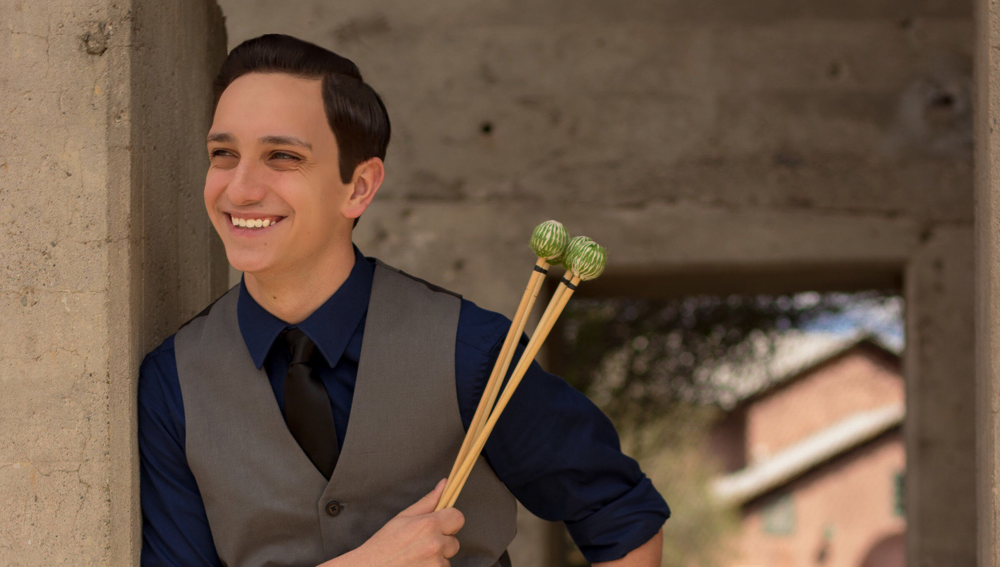

Bio
Currently Studying at the Blair School of Music at Vanderbilt University, Eric Whitmer is a percussionist, arts administrator, photographer, and web designer. A native of Redding, California, Eric began his music education through the Orff Approach to music education at Redding School of the Arts.
As a percussionist, Eric has played wwith ensembles such as the North State Symphony, the Shasta Symphony Orchestra, and the Vanderbilt Orchestra. He has played chamber music in performances with the North State Symphony, the Redding Performing Arts Society, and the Vanderbilt Percussion Group. He has given concerto performances with both the North State Symphony, and the Shasta Symphony Orchestra.
At Vanderbilt University, Eric is a Deans Honor Scholar, and a Littlejohn Research Fellow where he is pursing a Bachelor of Music in Percussion Performance with a business minor. He studies with Prof. JiHye Jung and Prof. Lee Vinson. Past instructors include Jacob Nissly and Dr. Dwayne Corbin. He has also studied arts adminsitration extensively with Prof. Mitchell Korn.
Working in arts administration, Eric has held a variety of positions both locally in Northern California and across the United States. He has held positions with the Redding Performing Arts Society, the North State Symphony, and Southern California Marimba. He has also written and implement a grant program through the Shasta Regional Community Foundation, that allowed him and a colleage to tour Northern California on a joint educational engagement and concert tour.
Eric currently serves as a member of the Board of Directors where he made history as the youngest board member in the history of the organization. He is also the Associate Director for Southern California Marimba. At SCM, Eric has helped to launch their "Database of Marimba Music by BIPOC Composers" and is currently helping to produce their 2021 International Artist Competition. Eric is also the Co-Orchestra Manager for the Vanderbilt Orchestra working with Prof. Robin Fountain to help organize logistics and operations of the ensemble.